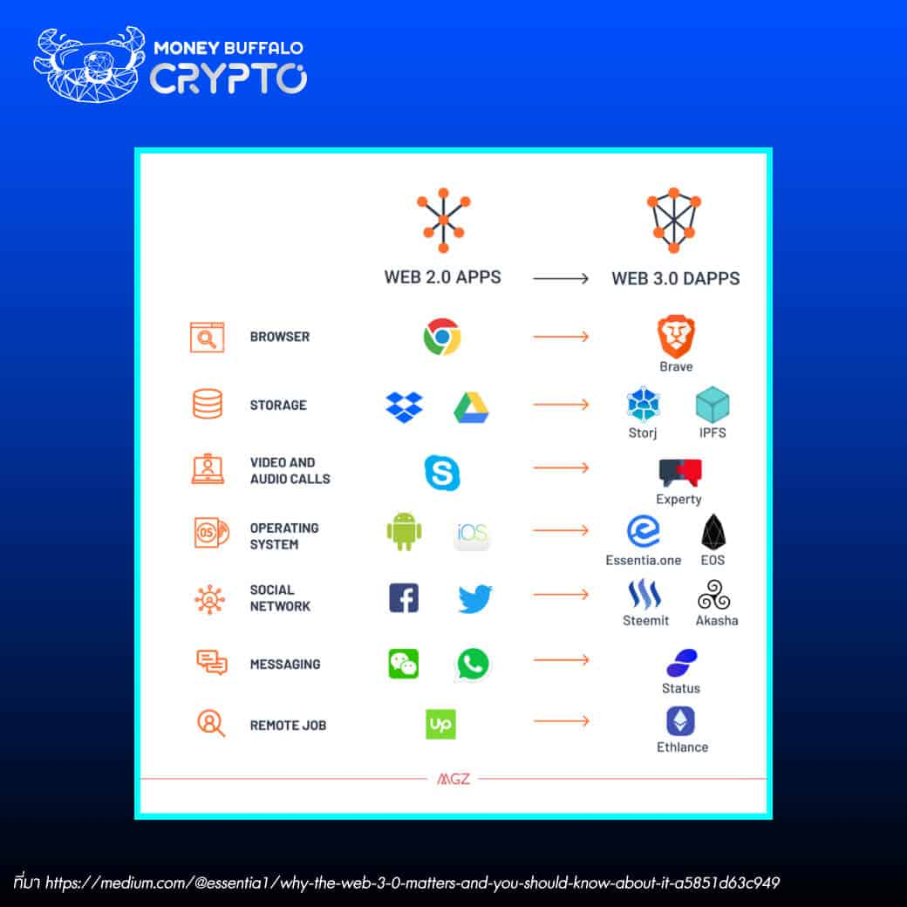

การเข้ามาของ Web 3.0 จะให้กรรมสิทธิ์ความเป็นเจ้าของสินทรัพย์ดิจิทัลแก่ผู้ใช้งาน แตกต่างจาก Web รุ่นก่อน
หากเทียบกับเกมออนไลน์บน Web 2.0 เมื่อผู้ใช้งานซื้อไอเทมในเกมด้วยเงินจริง ระบบจะดำเนินการเติมไอเทมเข้าไปในบัญชีผู้ใช้งาน ถึงอย่างนั้น บัญชีของผู้ใช้งานก็ยังสามารถถูกลบทิ้งได้ หรือเกมที่เล่นอยู่ก็อาจถูกระงับจากบริษัทเจ้าของเกม ส่งผลให้ไอเทมที่เสียเงินจ่ายไปนั้นหายไปด้วย ไม่ได้ตกเป็นสิทธิของผู้ใช้งานอย่างเด็ดขาดแม้จะซื้อมาแล้วก็ตาม
ในขณะเดียวกัน หากเทียบกับบริบทของ Web 3.0 แล้วนั้น ผู้ใช้งานจะไม่เจอกรณีดังกล่าว เพราะระบบจะเปิดให้ผู้ใช้งานได้ถือครองสิทธิเป็นเจ้าของสินทรัพย์ดิจิทัลได้โดยตรง โดยให้ถือกรรมสิทธิ์ผ่านรูปแบบ NFT ทำให้ผู้ใช้งานมั่นใจได้ว่า ไม่มีใครเข้ามาครอบครองหรือถือสิทธิในการอ้างสิทธิความเป็นเจ้าของในสินทรัพย์ที่ซื้อมา

ที่มา
https://zipmex.com/th/learn/what-is-web-3-0/#header-c6